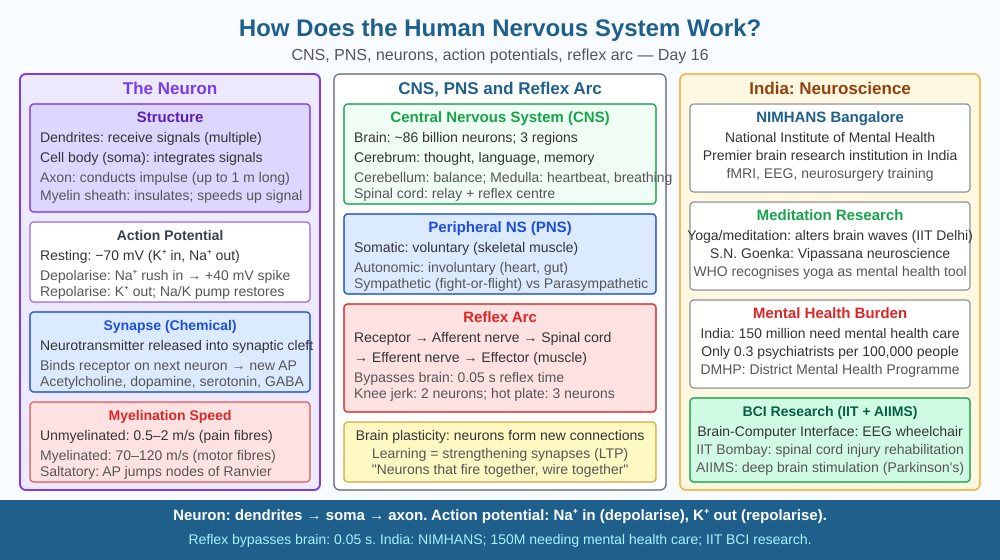

By the end of this lesson, you should be able to trace the path of a nerve impulse from stimulus to response, name the key structural parts of a neuron, explain how signals cross a synapse, and predict what happens to nerve signal speed when myelin is damaged.
You touch a hot tawa in the kitchen. Before you have even consciously registered the heat, your hand has already pulled away. The entire sequence — detecting heat, sending a signal, contracting muscles — takes less than 0.1 seconds. Yet the distance from your fingertip to your spinal cord and back is roughly 1.5 metres in an adult. How does a signal travel that fast? And why is the response faster than your conscious thought?
The human nervous system is divided into two main parts: the central nervous system (CNS) — comprising the brain and spinal cord — and the peripheral nervous system (PNS) — all the nerves branching out to the rest of the body.
The neuron — basic unit of the nervous system
The functional unit is the neuron, a specialised cell with three main regions:
Many axons are wrapped in a fatty insulating layer called the myelin sheath, produced by Schwann cells in the PNS. The myelin does not cover the axon continuously — it leaves regular gaps called nodes of Ranvier. Instead of travelling the full length of the axon continuously, the electrical impulse jumps from node to node in a process called saltatory conduction (from the Latin saltare, to jump). This dramatically increases signal speed: unmyelinated nerve fibres conduct at 0.5–2 m/s, while heavily myelinated fibres conduct at 70–120 m/s.
The nerve impulse — action potential
A resting neuron maintains a resting membrane potential of approximately −70 millivolts (mV) inside relative to outside. This negative charge is maintained by the sodium-potassium pump, which actively moves 3 Na⁺ ions out of the cell and 2 K⁺ ions in for every ATP molecule used.
When a stimulus is strong enough, sodium channels in the axon membrane open, and Na⁺ ions rush into the cell, rapidly reversing the membrane potential to approximately +40 mV. This is depolarisation, and it constitutes the electrical nerve impulse — called an action potential. The depolarisation wave travels down the axon as each section's sodium channels open in sequence, triggered by the electrical change in the adjacent section. After depolarisation, potassium channels open, K⁺ ions flow out, and the membrane repolarises back toward −70 mV (repolarisation), ready for the next impulse.
The synapse — chemical handoff between neurons
Neurons do not touch each other directly. Between any two neurons lies a tiny gap of 20–40 nanometres called a synapse (specifically, the synaptic cleft). The neuron sending the signal is the presynaptic neuron; the one receiving is the postsynaptic neuron.
When the action potential reaches the axon terminal, it triggers the release of chemical messengers called neurotransmitters from small membrane pouches called synaptic vesicles. The neurotransmitter molecules diffuse across the synaptic cleft and bind to specific protein receptors on the membrane of the postsynaptic neuron. Binding opens ion channels in the postsynaptic membrane, either triggering a new action potential (if the neurotransmitter is excitatory, like acetylcholine or glutamate) or preventing one (if it is inhibitory, like GABA). Common neurotransmitters include acetylcholine (at neuromuscular junctions), dopamine, serotonin, and adrenaline.
Reflex arc — the fastest responses bypass the brain entirely. A reflex arc routes the signal from a sensory receptor → sensory neuron → relay neuron in the spinal cord → motor neuron → effector (muscle or gland). The conscious brain receives a copy of the signal afterward, which is why you are aware of the pain a moment after your hand has already moved.
Think of the nervous system as a telephone network:
The included SVG shows two diagrams:

Understanding nerve signal transmission explains several medical realities:
Q3 established that damaging myelin sheaths slows or disrupts nerve signal transmission, as seen in multiple sclerosis. Now extend the prediction: the degree of demyelination in MS varies — some patches of myelin are only partially damaged, not fully destroyed.
Predict: In a neuron with partially damaged myelin, would the signal be completely absent, or would you expect a partial, degraded signal? Consider that saltatory conduction depends on the impulse jumping reliably from one node of Ranvier to the next. If a section of myelin is thinned rather than removed entirely, would the action potential still jump correctly across that region, or would signal leakage slow or distort it? Relate your prediction to why MS symptoms often fluctuate — getting worse in heat and temporarily improving in cold — given that ion channel conductance changes with temperature.
What is the basic unit of the nervous system that transmits signals?
Correct answer: b
Why is understanding nerve signal transmission more useful than knowing the nervous system exists?
Correct answer: a
What would happen to nerve signal speed if myelin sheaths were damaged?
Correct answer: b
Explain today's concept to a younger student in 60 seconds without technical jargon. Then explain it again using the correct scientific vocabulary.
If both explanations describe the same mechanism, you have understood the concept rather than memorised it.
Your brain contains approximately 86 billion neurons, and each neuron can form connections (synapses) with up to 10,000 other neurons. This gives the human brain an estimated 100 trillion synaptic connections. The total number of possible signal pathways is astronomically larger than the number of atoms in the observable universe. Yet this entire network runs on electrical signals that use the same basic mechanism — sodium and potassium ions moving across a membrane — that was first described in squid giant axons in 1952 by Hodgkin and Huxley.
A nerve impulse is an electrochemical action potential that travels along a neuron's axon — sped by saltatory conduction through myelin sheaths — and crosses synapses via neurotransmitter chemicals, so damaged myelin slows signals and causes neurological symptoms like those seen in multiple sclerosis.